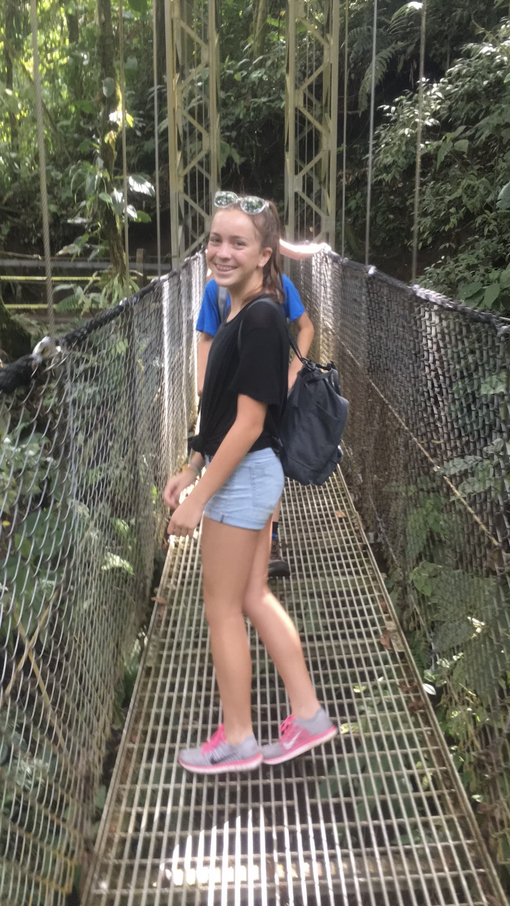
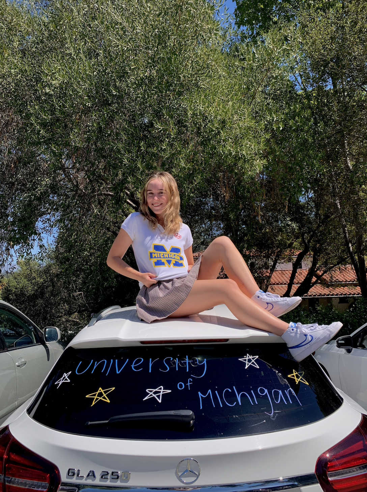
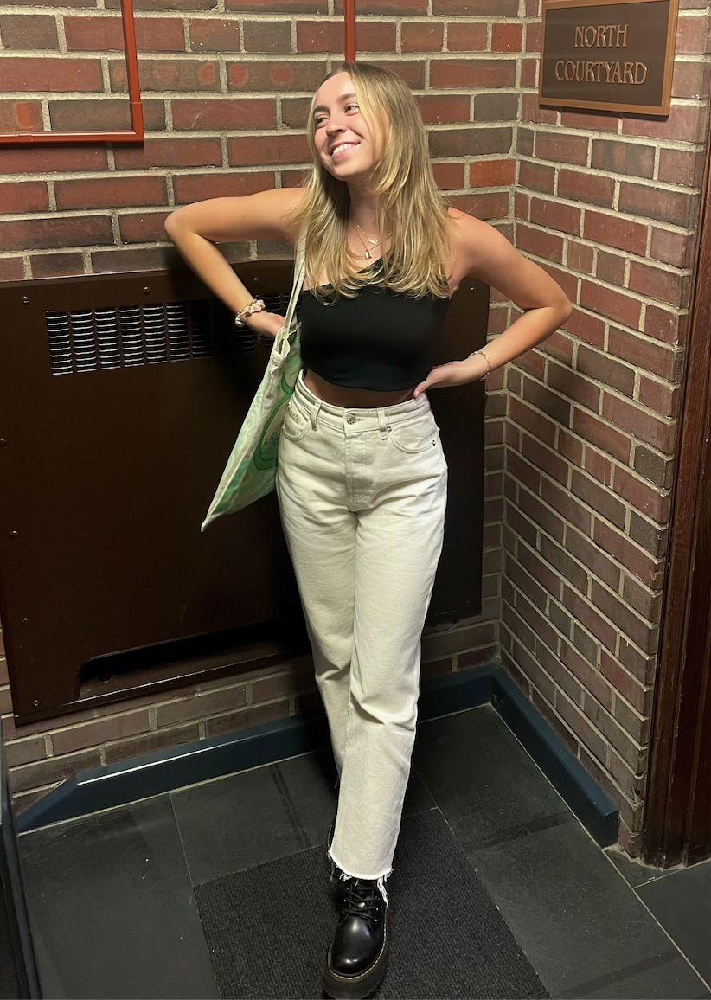
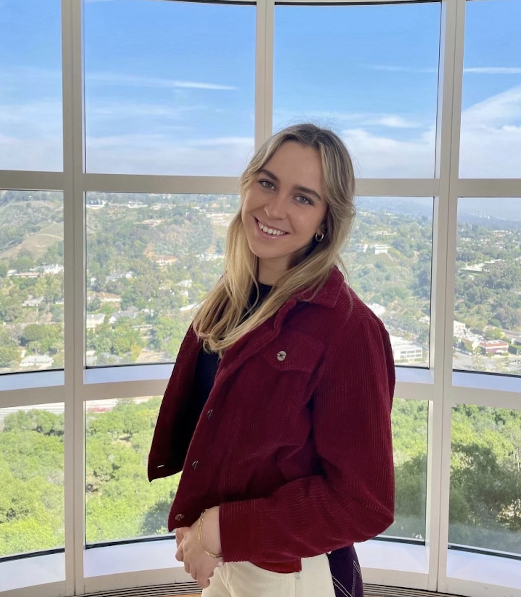

About Me: Samantha Paige Pratt
Hover over or focus on images below to learn more!

I was born on April 28, 2003.

My favorite color is purple.

I love going to the beach and swimming.
I grew up in Los Angeles, California with two sisters.

In 8th grade, I left the country for the first time for a Spanish Immersion Trip in Costa Rica.

I decided to attend the University of Michigan after high school.
I graduated from Mayfield Senior School in 2021.

I am currently attending the University of Michigan with a major in UX Design and a minor in Computer Science.

I love going back home to LA and exploring new places.